← Index · ← Previous · Next →
Authors: Tushar Pandey
Type: theory · Category: quantum information and computing · PDF: https://arxiv.org/pdf/2605.05625v1
Analysis basis: full PDF text, analyzed in chunks
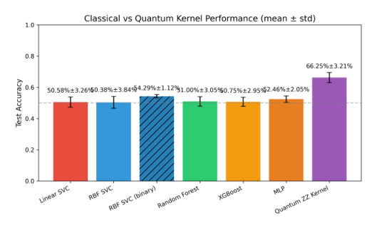
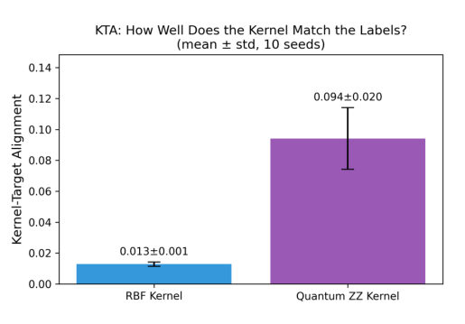
Summary. This paper demonstrates that quantum kernels can outperform classical methods specifically when tackling high-order parity-structured classification tasks. It identifies a clear complexity threshold where the quantum ZZ feature map's ability to capture multi-feature correlations provides a genuine advantage over classical RBF kernels.
Why it may be interesting. not directly relevant
Main problem. Investigating whether quantum kernels provide a genuine advantage over classical kernels for high-order parity (XOR) classification tasks, and determining if this advantage stems from the quantum circuit's expressivity or merely the feature encoding.
Main result. A phase transition in performance was identified: for low parity complexity (n <= 8), classical binary encoding dominates, but for high complexity (n >= 9), the quantum ZZ kernel achieves a significant advantage, outperforming classical methods by up to 12 percentage points.
Method. The study uses exact statevector simulations of a hybrid pipeline, comparing a ZZ quantum feature map against classical RBF SVMs and a 'binary encoding ablation' study to isolate circuit effects from encoding effects.
Model / system. A quantum feature map using n qubits with a ZZ structure (comprising single-qucept rotations and entangling Z_i Z_j gates) applied to synthetic 500-dimensional data with n-way XOR parity labels.
Key observables. Test accuracy, Kernel-Target Alignment (KTA), and parity complexity (n).
Important parameters / regimes. Parity complexity (n = 5 to 11), number of ZZ repetitions (r = 3), and label noise (22%).
Assumptions / limitations. The study assumes exact statevector simulation without hardware noise (shot noise, decoherence) and uses an 'oracle' feature selection method which may not reflect real-world feature discovery.
Figures summary. Figure 2 shows the comparison of Kernel-Target Alignment, highlighting the 7x superiority of the quantum ZZ kernel over RBF at n=11; Table I illustrates the performance transition/complexity sweep.
Paper structure. The paper introduces the parity classification problem, describes the quantum and classical models/encoding, details the simulation methodology, presents the complexity sweep results and ablation study, and concludes with a discussion on the source of quantum advantage and limitations.
Parity (XOR) classification requires detecting discrete, high-order feature interactions that smooth classical kernels cannot efficiently capture. We study how quantum kernel advantage depends on parity complexity, the number of features entering the XOR rule, and find a clear threshold behavior. We pair a ZZ quantum feature map with binary {0, pi} encoding (features median thresholded before circuit input) to expose parity structure. A binary encoding ablation, RBF SVM trained on the identical {0, pi} features, separates encoding from circuit effects: at low complexity (n = 5 features), binary RBF achieves 83.4% +/- 1.7% and the quantum kernel 81.2% +/- 1.9%, showing encoding drives performance there. At high complexity (n = 11 features, 11 qubits, r = 3 ZZ repetitions), all classical methods collapse to near-random (approx. 50%), binary RBF reaches only 54.3% +/- 1.1%, and the quantum ZZ kernel achieves 66.3% +/- 3.2% (mean +/- std, 10 seeds), a +12.0 percentage-point margin over the binary ablation and approx. 7x higher kernel-target alignment (0.094 +/- 0.020 vs. 0.013 +/- 0.001). These results identify parity complexity as a concrete axis along which genuine quantum kernel advantage, not attributable to encoding alone, emerges.
Authors: Vishal, Malay K. Nandy
Type: theory · Category: other · PDF: https://arxiv.org/pdf/2605.06093v1
Analysis basis: full PDF text, analyzed in chunks
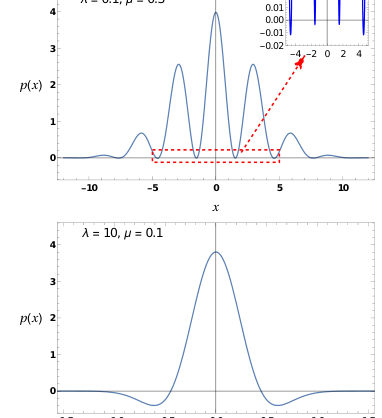
Summary. This paper uses the Page-Wootters relational formalism to show how time and dynamics can emerge from a stationary quantum state in a Bianchi Type-I universe. It demonstrates that quantum effects effectively resolve the classical Big Bang singularity by making the probability of zero volume vanish. The study also establishes necessary constraints on the internal clock to maintain physically valid, positive probability densities.
Why it may be interesting. not directly relevant
Main problem. The paper addresses the problem of time in canonical quantum gravity and the resolution of the classical Big Bang singularity in a timeless Wheeler-DeWitt framework.
Main result. The authors demonstrate that the conditional probability density of the universe's volume vanishes at the zero-volume limit, indicating quantum resolution of the singularity, while also identifying constraints on the clock variable to ensure positive probability density.
Method. The Page-Wootters relational formalism is used to derive dynamics by conditioning a global stationary state on a clock subsystem, employing a Gaussian superposition of momentum eigenstates and a Klein-Gordon type inner product.
Model / system. A plane-symmetric Bianchi Type-I universe within the Wheeler-DeWitt framework, modeled using Misner variables where the anisotropy variable beta acts as an internal clock and alpha represents the volume.
Key observables. The conditional probability density of the universe's volume (alpha) relative to the clock reading (beta).
Important parameters / regimes. The mean momentum (k0), the Gaussian wavepacket width (sigma), and the clock reading (beta_0).
Assumptions / limitations. The universe is treated as a closed system without an external observer; the clock Hamiltonian is quadratic in momentum; and the clock does not interact with the remaining degrees of freedom.
Figures summary. Figure 1 displays plots of the conditional probability density for the volume parameter.
Paper structure. The paper introduces the problem of time and singularity, implements the Page-Wootters framework on a Bianchi Type-I model, constructs the wavefunctions and inner products, derives the probability densities, and analyzes the resulting constraints and singularity resolution.
We investigate the problem of classical big bang singularity in a plane-symmetric Bianchi type-I universe within the Wheeler-DeWitt (WDW) framework of quantum gravity. To address the problem of time, we employ the Page-Wootters formalism, which provides a relational notion of dynamics by conditioning the global state on a clock subsystem. Using Misner variables, the WDW equation assumes a Klein-Gordon (KG) type form. Its general solution is constructed as a Gaussian superposition of momentum eigenstates, resulting in an entangled global state between the clock and the remaining subsystem. Within this relational framework, we construct conditional states and obtain the corresponding probability density consistent with the KG-type inner product. The resulting conditional probability density vanishes in the limit of zero volume for all clock values, indicating quantum resolution of the classical singularity. We further show that positivity of the probability density imposes constraints on the admissible clock values, which depend on the parameters of the Gaussian wavepacket. These results highlight the essential role of quantum correlations in the emergence of relational dynamics, and demonstrate that the Page-Wootters formalism provides a consistent and nonsingular probabilistic description of quantum cosmology.
Authors: Theja N. De Silva
Type: theory · Category: strongly correlated electrons · PDF: https://arxiv.org/pdf/2605.06422v1
Analysis basis: full PDF text, analyzed in chunks
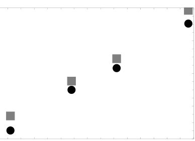
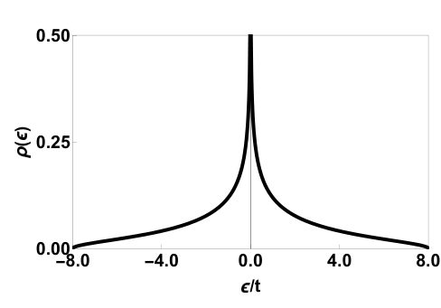
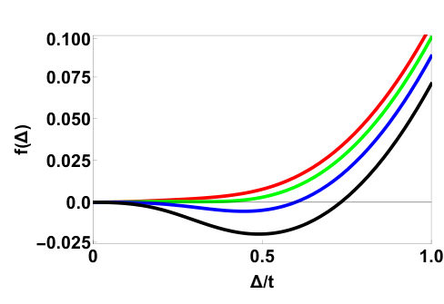
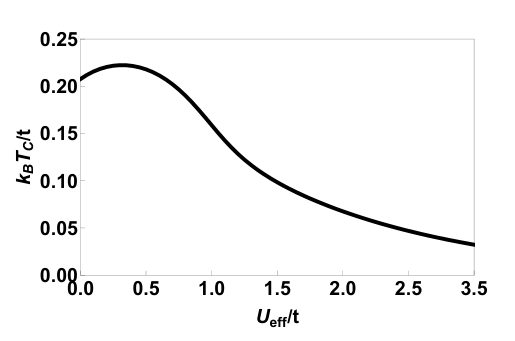
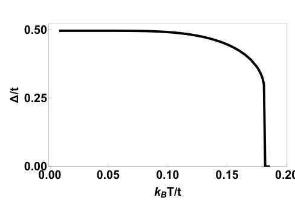
Summary. This paper explores the complex phase diagram of a 3D Hubbard model on a BCC lattice, which serves as a model for alkali-doped fullerides. It reveals that the transition to superconductivity is first-order and identifies a multicritical region where Mott insulating, antiferromagnetic, and Fermi-liquid phases coexist. The work provides a unified perspective on how lattice geometry and electron-phonon-mediated interactions drive competing electronic orders.
Why it may be interesting. not directly relevant
Main problem. Investigating the competition and interplay between superconducting, magnetic, and Mott insulating phases in a 3D BCC lattice, specifically motivated by alkali-doped fulleride molecular solids.
Main result. The study demonstrates a first-order normal-to-superconducting phase transition and identifies a temperature-interaction phase diagram in the strong-coupling regime featuring a narrow region where Fermi-liquid, antiferromagnetic, and Mott insulating phases compete.
Method. The authors employ two approaches: the Hatsugai-Kohmoto model supplemented by a BCS-type pairing term for the intermediate-coupling regime, and a spin-rotationally invariant slave-boson formalism for the strong-coupling regime.
Model / system. An effective Hubbard model on a body-centered-cubic (BCC) lattice, incorporating renormalized on-site Coulomb interactions (U_eff) and an effective inverted Hund's coupling (J_eff) originating from electron-phonon interactions.
Key observables. Superconducting order parameter (delta), critical temperature (T_C), quasiparticle weight, and free energy.
Important parameters / regimes. Effective on-site interaction (U_eff), effective Hund's coupling (J_eff), hopping amplitude (t), and the super-exchange interaction scale (J_ex).
Assumptions / limitations. Neglects off-site Coulomb interactions, spin-flip interactions, and orbital degrees of freedom; assumes diagonal electron hopping between molecular orbitals; uses the anti-adiabatic limit for electron-phonon interactions.
Figures summary. Figure 1 shows effective on-site interactions as a function of C60 volume; Figure 6 shows a three-phase structure for the BCC lattice similar to a 2D square lattice.
Paper structure. The paper introduces the physical motivation (fullerides), defines the effective Hubbard model, presents the intermediate-coupling analysis using the HK-BCS model, details the strong-coupling analysis using the slave-boson approach, and concludes with a discussion of the resulting phase diagram and limitations.
We investigate the electronic phases of an effective Hubbard model on the body-centered-cubic lattice, motivated by alkali-doped fulleride molecular solids. The model incorporates renormalized on-site interactions and an effective inverted Hund's coupling originating from electron-phonon interactions. To access complementary interaction regimes, we employ two theoretical approaches. In the intermediate-coupling regime, the on-site repulsive interaction is approximated by a long-range interaction in momentum space, yielding an exactly solvable Hatsugai-Kohmoto model supplemented by a BCS-type pairing term. Within this framework, we analyze the superconducting instability and demonstrate a first-order normal-superconducting phase transition, characterized by a discontinuous jump of the order parameter. In the strong-coupling regime, where pairing fluctuations are suppressed, we apply the spin rotationally invariant slave-boson formalism to map out the temperature-interaction phase diagram. This analysis reveals first-order transitions between a Fermi-liquid phase, an antiferromagnetic phase, and a Mott insulating phase, with a narrow intermediate region where all three phases compete. The resulting phase diagram captures the interplay of itinerancy, magnetic order, and Mott localization in three dimensions and provides a unified perspective on superconducting and correlation-driven phenomena in fulleride-inspired lattice systems.
Authors: Arun John Moncy, Reza Dastbasteh, Josu Etxezarreta Martinez, Ryo Nagai, Pedro M. Crespo, Normann Mertig, Charles Smith, Ruben M. Otxoa
Type: theory · Category: quantum information and computing · PDF: https://arxiv.org/pdf/2605.05881v1
Analysis basis: full PDF text, analyzed in chunks
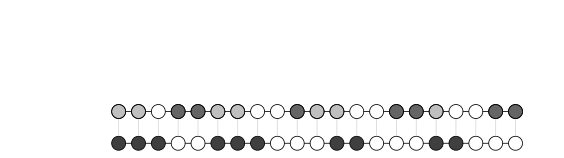
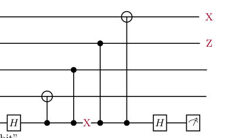
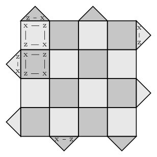
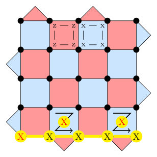
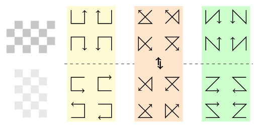
Summary. This paper investigates how to implement fault-tolerant surface codes on a 1D-like 'railway' of silicon spin qubits that use electron shuttling to solve wiring constraints. It demonstrates that by moving check qubits instead of data qubits and using the XZZX code to match the inherent dephasing noise, the physical hardware required for large-scale quantum computing can be significantly reduced.
Why it may be interesting. The paper provides deep insights into how tailoring topological error correction to the specific, asymmetric noise profiles of a physical platform (dephasing-biased transport) can drastically reduce the resource overhead for fault-tolerant quantum computing.
Main problem. Addressing the wiring fan-out bottleneck in large-scale 2D spin-qubit arrays by evaluating fault-tolerant surface codes on a restricted 2xN 'railway' architecture using electron shuttling.
Main result. Shuttling check qubits instead of data qubits improves thresholds, and using the XZZX surface code under dephasing-biased noise allows a distance-7 code to reach the 'Megaquop' regime with a 72% reduction in qubit footprint.
Method. Circuit-level noise modeling using the STIM package and Minimum-Weight Perfect Matching (MWPM) decoding to evaluate error thresholds and logical error rates.
Model / system. A 2xN silicon spin-qubit 'railway' architecture utilizing coherent electron shuttling, modeled with a time-dependent Hamiltonian including external magnetic fields, micromagnet gradients, and Spin-Orbit Coupling (Rashba and Dresselhaus).
Key observables. Error thresholds (physical error rate p), logical error rates, noise bias (ratio of Z to X/Y errors), and qubit footprint (hardware overhead).
Important parameters / regimes. Code distance (d=3 to 17), noise bias (eta), idling factor, and physical error rate (p = 10^-3 to 3*10^-3).
Assumptions / limitations. Quasi-static noise limit, Pauli-twirled approximation for uncorrelated errors, and a unidirectional 'Train Schedule' for syndrome extraction.
Figures summary. Figure 1 shows the 2xN railway architecture schematic; Figure 2 shows a d=5 XZZX lattice; Figure 3 illustrates stabilizer extraction and hook errors; Figure 5/6 demonstrate the optimized extraction order and 'Train Schedule'.
Paper structure. The paper introduces the wiring bottleneck and railway architecture, defines the physical Hamiltonian and noise model, presents the syndrome extraction protocol (Train Schedule), compares CSS vs. XZZX codes under various noise biases, and concludes with hardware footprint analysis.
We present a fault-tolerant mapping of rotated surface codes onto a $2\times N$ silicon spin-qubit railway architecture, utilizing electron shuttling to resolve the wiring fan-out bottleneck. Employing circuit-level noise modeling, we evaluate threshold performances across various noise biases. We demonstrate that shuttling check qubits instead of data qubits fundamentally improves system thresholds. Crucially, under a noise model biased towards dephasing for spin-qubit shuttling, the non-CSS XZZX surface code outperforms standard CSS variants. By tailoring the topological code to this specific inherent bias, we show that the Megaquop footprint is achievable with a distance 7 code requiring a $p = 10^{-3}$ physical error rate, highlighting a pathway for substantial hardware reductions in early fault-tolerant quantum processors.
Authors: Yu-Xuan Zhang, Jing-Ling Chen
Type: theory · Category: other · PDF: https://arxiv.org/pdf/2605.06379v1
Analysis basis: full PDF text, analyzed in chunks
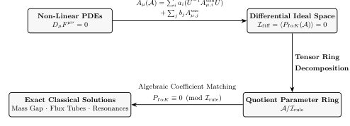
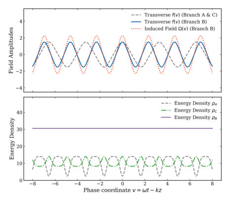
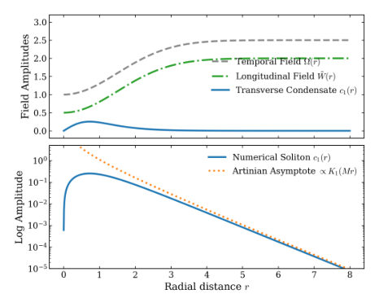
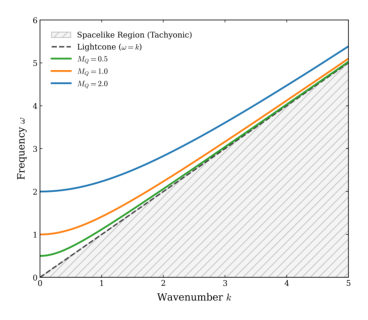
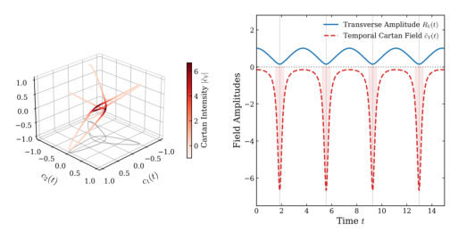
Summary. This paper introduces a new algebraic method to systematically find exact solutions to the non-linear Yang-Mills equations. By using tensor ring decomposition, the authors derive stable configurations like color waves and flux tubes that provide analytical insights into non-perturbative phenomena like mass gap generation and confinement.
Why it may be interesting. not directly relevant
Main problem. The difficulty of extracting exact classical solutions from the non-linear partial differential equations of Yang-Mills theory and understanding the stability of these solutions against tachyonic vacuum instabilities.
Main result. The authors successfully extracted exact solutions for SU(2) and SU(3) gauge theories, including relativistic color waves and dynamical flux tubes, and proved their structural stability against the Savvidy instability.
Method. An algebraic tensor ring decomposition framework that maps non-linear PDEs into tractable differential-algebraic systems using differential ideals and quotient rings (elliptic and Artinian).
Model / system. Non-Abelian Yang-Mills theory (specifically SU(2) and SU(3) sectors) in Minkowski spacetime, featuring configurations such as relativistic color waves, helical dyonic flux tubes, and chaotic SU(3) resonances.
Key observables. Energy-momentum tensor (energy density, momentum flux), field strength components, effective mass, and isospin charge.
Important parameters / regimes. Temporal frequency (omega), longitudinal wavenumber (k), azimuthal winding number (n), geometric coupling constant (gamma), and the temporal dominance condition (M^2 > 0).
Assumptions / limitations. The framework assumes the validity of evaluating the system over specific algebraic rings and that certain field components can be constrained to proportional rays.
Figures summary. Figure 1 shows the workflow from PDEs to exact solutions; Figure 3 displays radial profiles of SU(2) helical flux tubes; Figure 4 shows 3D orbital trajectories of SU(3) chaotic attractors and the kinetic cancellation mechanism.
Paper structure. The paper introduces the algebraic tensor ring decomposition framework, applies it to SU(2) color waves and helical flux tubes to demonstrate mass gap and screening, extends the analysis to SU(3) dynamics and chaotic oscillators, and concludes with a semiclassical stability analysis against the Savvidy instability.
The non-linear nature of Yang-Mills theory presents a challenge for extracting exact classical solutions, which are useful for understanding non-perturbative vacuum structures. In this paper, an algebraic tensor ring decomposition framework is introduced to systematically map the non-linear partial differential equations (PDEs) of Yang-Mills theory into tractable differential-algebraic systems. By promoting static pure-gauge backgrounds to dynamical variables, the reference state acts as a geometric template whose Maurer-Cartan forms generate the algebraic cross-terms necessary to stabilize non-linear self-interactions. To analytically resolve the resulting differential ideals, specific differential-algebraic quotient rings are employed as evaluation tools, and the solution space is organized by an algebraic bifurcation analysis. Applying this framework, three distinct classes of exact solutions are extracted: (i) relativistic $SU(2)$ color waves evaluated over an elliptic quotient ring, where the differential ideal bifurcates into a Decoupled Branch and two Coupled Branches, the latter exhibiting mass gap generation; (ii) dynamical dyonic flux tubes obtained from a time-dependent helical template, where the Gauss law ideal bifurcates the system into Coulomb, Dyonic, and symmetric Meissner branches. In the Meissner branch, an Artinian asymptotic truncation yields Bessel-type exponential screening, stabilized by a temporal dominance condition; and (iii) dynamical $SU(3)$ configurations where the Gauss law ideal bifurcates the solution space into four distinct phases. The non-trivial branches enforce a kinetic cancellation mechanism that maps the amplitude dynamics onto a generalized $x^2y^2$ chaotic oscillator. Across these settings, the framework provides a methodical approach to characterize the classical solution space of strongly coupled gauge theories.
Authors: Flavio Nicoletti, Chenxiao Ma, Enrico Ventura, Luca Saglietti, Stefano Sarao Mannelli
Type: both · Category: disordered systems and neural networks · PDF: https://arxiv.org/pdf/2605.06367v1
Analysis basis: full PDF text, analyzed in chunks
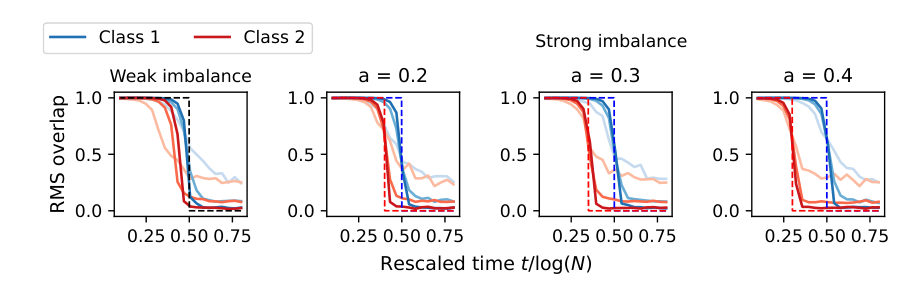
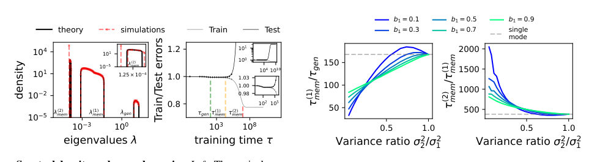
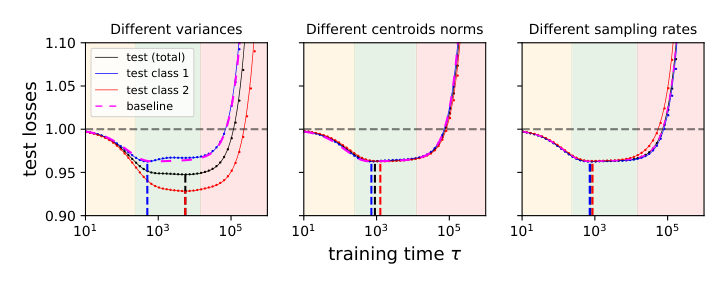
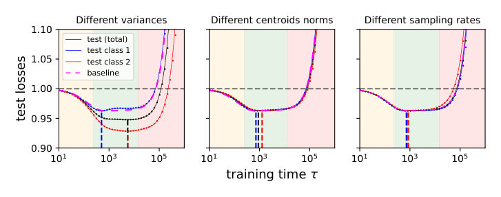
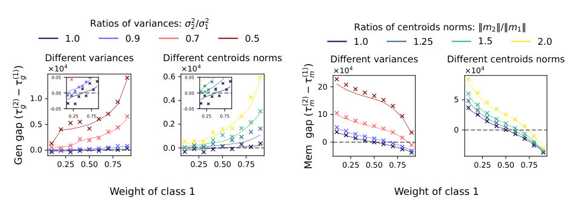
Summary. This paper provides a theoretical and empirical framework to explain how data heterogeneity and imbalance cause diffusion models to learn different classes at different rates. It reveals that class variance is the dominant factor in determining whether a model generalizes or memorizes a specific sub-population first.
Why it may be interesting. not directly relevant
Main problem. Understanding how class-specific data structures (variance, geometry) and sampling imbalance shape the training dynamics, specifically the timing of generalization and memorization in diffusion models.
Main result. Established a hierarchy where class variance is the primary driver of learning order, while sampling imbalance acts as a modulator that can reverse this order and delay the learning of minority classes.
Method. A high-dimensional analytical framework using Random Matrix Theory and Gaussian Equivalence, validated against numerical simulations of Random Feature models and U-Net diffusion models on Fashion MNIST and CIFAR.
Model / system. The study analyzes score-based diffusion models (DDPM) and Random Feature models trained on heterogeneous Gaussian Mixture Models (GMM) representing imbalanced datasets.
Key observables. Feature-covariance spectrum, class-specific speciation times, generalization and memorization windows, and memorization fraction based on nearest-neighbor distance ratios.
Important parameters / regimes. Class variance, centroid geometry (norms), sampling imbalance (mixing proportions), diffusion time (t), and training time (tau).
Assumptions / limitations. Data follows a Gaussian Mixture Model; the analysis relies on high-dimensional asymptotic limits; the model uses a random feature architecture; classes are assumed to be well-separated.
Figures summary. Figures illustrate how imbalance induces separation in speciation times, show the alignment between theoretical error curves and simulations, and demonstrate the correlation between memorization gaps and class variance/geometry.
Paper structure. The paper introduces the problem of class-dependent dynamics, develops a high-dimensional analytical framework using RMT, provides theoretical derivations for spectral edges and error dynamics, and validates these findings through large-scale experiments on Fashion MNIST and CIFAR datasets.
Real-world datasets are inherently heterogeneous, yet how per-class structural differences and sampling imbalance shape the training dynamics of diffusion models-and potentially exacerbate disparities-remains poorly understood. While models typically transition from an initial phase of generalization to memorizing the training set, existing theory assumes homogeneous data, leaving open how class imbalance and heterogeneity reshape these dynamics. In this work, we develop a high-dimensional analytical framework to study class-dependent learning in score-based diffusion models. Analyzing a random-features model trained on Gaussian mixtures, we derive the feature-covariance spectrum to characterize per-class generalization and memorization times. We reveal the explicit hierarchy governing these dynamics: class variance is the primary determinant of learning order-consistently favoring higher-variance classes-while centroid geometry plays a secondary role. Sampling imbalance acts as a modulator that can reverse this ordering and, under strong imbalance, forces minority classes to acquire distinct, delayed speciation times during backward diffusion. Together, these results suggest that diffusion models can memorize some classes while others remain insufficiently learned. We validate our theoretical predictions empirically using U-Net models trained on Fashion MNIST.
Authors: João A. A. S. Reis, L. Lisboa-Santos, Edilberto O. Silva
Type: theory · Category: statistical mechanics · PDF: https://arxiv.org/pdf/2605.05533v1
Analysis basis: full PDF text, analyzed in chunks
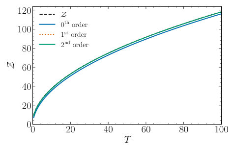
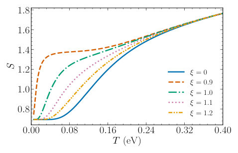
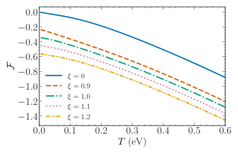
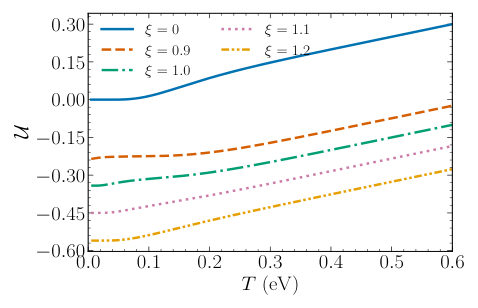
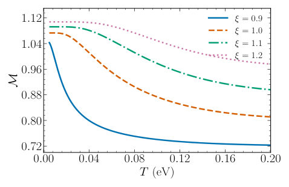
Summary. This paper explores how spin-orbit coupling in a quantum ring alters its thermodynamic and mechanical properties. It shows that these interactions can induce measurable effects like mechanical instabilities and anomalous thermal contraction, providing a way to probe spin-orbit coupling through macroscopic measurements.
Why it may be interesting. not directly relevant
Main problem. Investigating how nonminimal spin-orbit coupling deforms the energy spectrum of a 1D quantum ring and how this deformation manifests in macroscopic thermodynamic and thermomechanical response functions.
Main result. The coupling parameter xi reorganizes the energy spectrum, leading to mesoscopic de Haas-van Alphen-like oscillations in the grand-canonical ensemble and even anomalous thermal contraction in an interacting model.
Method. The authors use the Euler-Maclaurin summation formula to derive analytical expressions for partition functions in both canonical and grand-canonical ensembles, and introduce a phenomenological exponential resummation for interacting effects.
Model / system. A 1D quantum ring of radius r0 containing fermions, subject to effective spin-orbit interactions induced by nonminimal couplings to antisymmetric tensor fields.
Key observables. Internal energy, entropy, heat capacity, magnetization analog, susceptibility analog, persistent spin current, effective pressure, isothermal compressibility, and thermal expansion coefficient.
Important parameters / regimes. Spin-orbit coupling strength (xi), temperature (T), chemical potential (mu), and ring circumference (L).
Assumptions / limitations. The electrons are initially treated as non-interacting; the interacting model is phenomenological; the ring radius is treated as a quasi-static thermodynamic variable for mechanical analysis.
Figures summary. Figures demonstrate the accuracy of the Euler-Maclaurin expansion, the monotonic decrease of free energy, the sigmoid growth of entropy, the nonmonotonic behavior of magnetization and spin current, and the presence of mechanical instabilities and peaks in compressibility and expansion coefficients.
Paper structure. The paper moves from the derivation of the energy spectrum to the construction of thermodynamic partition functions, followed by the development of the thermomechanical framework and an extension into interacting systems.
We investigate the thermodynamic and emergent thermomechanical properties of fermions confined to a one-dimensional quantum ring with effective spin--orbit interactions induced by nonminimal couplings to antisymmetric tensor fields. Using the exact spectrum obtained in the companion work, we develop canonical and grand-canonical descriptions and show that the coupling parameter~$ξ$ deforms the angular-momentum branches, reorganizing the low-energy spectrum and leaving clear signatures in the internal energy, entropy, heat capacity, and spin--orbit response functions. We also formulate an effective thermomechanical description by treating the ring circumference as a quasi-static thermodynamic variable. This leads to a pressure-like quantity and associated response coefficients, directly linked to the microscopic spectrum. In the grand-canonical ensemble, Fermi statistics strongly enhance the response, producing coupling-dependent instabilities and sign changes reminiscent of mesoscopic de~Haas--van Alphen oscillations. Finally, we introduce a phenomenological interacting extension based on an exponential resummation of the free energy, showing that collective effects can sharpen the thermomechanical response and induce anomalous thermal contraction. Our results connect spectral deformation, finite-size thermodynamics, and emergent mechanical behavior in spin--orbit-active quantum rings.
Authors: David T. S. Perkins, Joseph J. Betouras
Type: theory · Category: strongly correlated electrons · PDF: https://arxiv.org/pdf/2605.06551v1
Analysis basis: full PDF text, analyzed in chunks
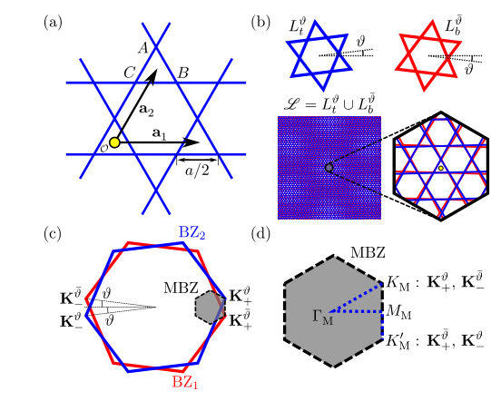
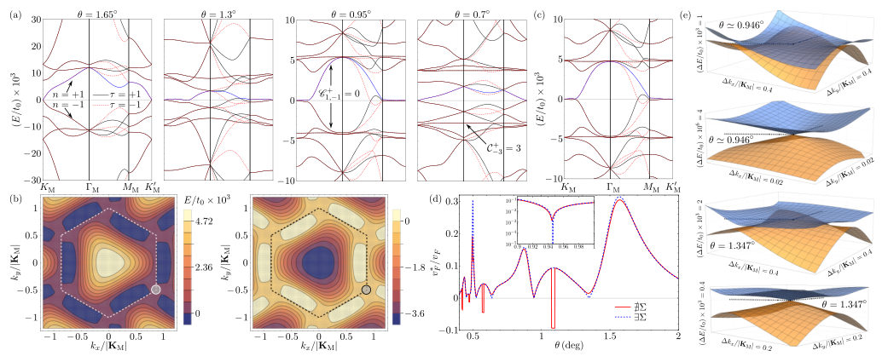
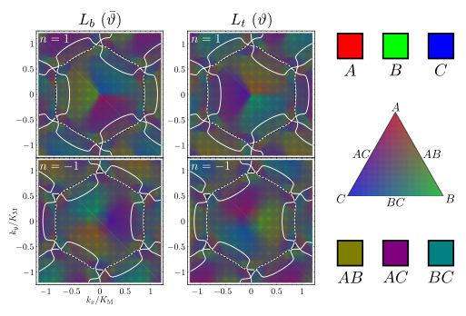
Summary. This paper presents a theoretical framework for understanding twisted kagome bilayers, identifying specific 'higher-order magic angles' where electronic bands become extremely flat. It reveals that twisting these layers can induce non-trivial topological phases and higher-order Van Hove singularities, offering a new platform for studying correlated physics.
Why it may be interesting. not directly relevant
Main problem. Investigating the emergence of higher-order magic angles, topological flat bands, and the role of sublattice interference in twisted kagome bilayers (TBK).
Main result. The study demonstrates the emergence of higher-order magic angles where significant band flattening and higher-order Van Hove singularities occur, and shows that twisting can induce non-trivial topology.
Method. A generalized Bistritzer-MacDonald continuum model is developed by projecting the kagome monolayer Hamiltonian onto the Dirac subspace and truncating the tunneling Hamiltonian.
Model / system. The system is a twisted kagome bilayer (TBK) heterostructure near 1/3 filling, modeled using a low-energy continuum Hamiltonian that incorporates interlayer tunneling and $p_z$-orbital-based parameters.
Key observables. Fermi velocity (vF), band flattening, Van Hove singularities (VHS), higher-order Van Hove singularities (HOVHS), and valley Chern numbers.
Important parameters / regimes. Twist angle (theta), interlayer tunneling energy scale (omega_0), layer separation (d_perp), and 1/3 filling regime.
Assumptions / limitations. The model assumes the physics is dominated by the Dirac cones (neglecting higher-energy bands), uses a truncated tunneling Hamiltonian, and assumes rapid decay of interlayer tunneling with momentum.
Figures summary. Fig 1 shows kagome geometry and MBZ construction; Fig 2 displays band structures, contour plots, and velocity renormalization; Fig 3 shows layer-resolved sublattice projections.
Paper structure. The paper introduces the TBK system and geometry, develops a generalized continuum model, analyzes the emergence of magic angles and higher-order singularities, investigates topological properties and symmetry breaking, and discusses the role of sublattice interference.
We develop a low-energy continuum model to describe the moiré physics of heterostructures, which is a generalization of the celebrated Bistritzer-MacDonald (BM) method [R. Bistritzer and A. H. MacDonald, Proc. Natl. Acad. Sci. U.S.A. 108, 12233 (2011)]. We take as an example the moiré physics of electrons in twisted bilayer kagomé (TBK) metals near $1/3$ filling where monolayer Dirac cones lie. We demonstrate the emergence of higher-order magic angles where significant local band flattening occurs as a high-order Van Hove singularity emerges and show how twisting alone can induce non-trivial topology. We, furthermore, show that while sublattice interference effects are present, their role is not as prominent as in monolayer kagome.
Authors: Ottavia Falconi, Giulio Cimini, Pablo Villegas
Type: theory · Category: statistical mechanics · PDF: https://arxiv.org/pdf/2605.06208v1
Analysis basis: full PDF text, analyzed in chunks
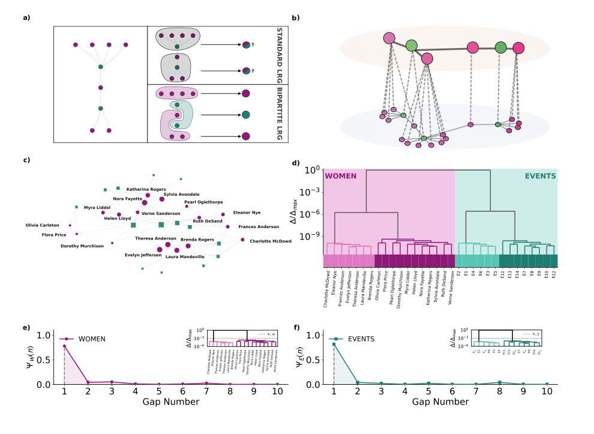
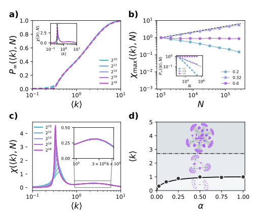
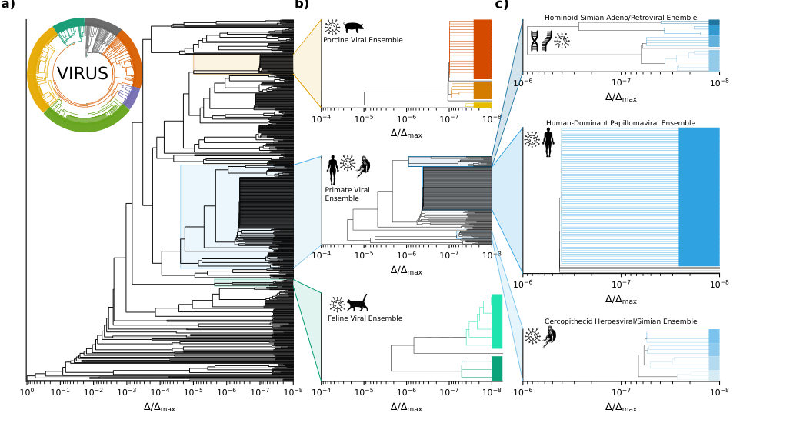
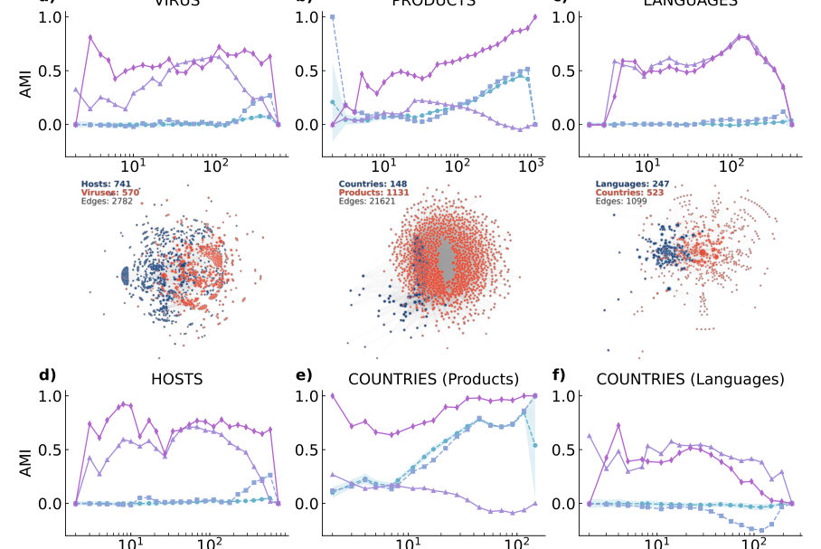
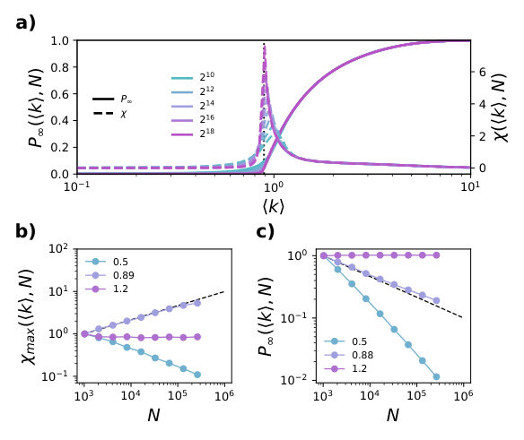
Summary. This paper presents a new renormalization method for bipartite networks that preserves their two-mode structure during coarse-graining. It shows that traditional one-mode projections fail to capture the true multiscale hierarchy of complex systems, especially when interactions depend on long-range alternating paths.
Why it may be interesting. not directly relevant
Main problem. Standard one-mode projections of bipartite networks collapse the two-mode architecture, leading to a loss of multiscale hierarchical information and a distortion of the underlying diffusion geometry.
Main result. The authors introduce a bipartite-preserving Laplacian renormalization framework (b-LRG) that reveals hidden hierarchies and demonstrates that while structural imbalance reshapes network geometry, it does not alter the universality class of the percolation transition.
Method. A Laplacian-based renormalization group (b-LRG) approach using diffusion dynamics on the graph Laplacian, combined with information-theoretic metrics (AMI/NMI) and finite-size scaling analysis.
Model / system. Bipartite networks with two distinct node classes, including controlled random bipartite ensembles at criticality and empirical networks such as host-virus, plant-pollinator, and social affiliation networks.
Key observables. Giant component size (P_inf), susceptibility (chi), spectral gap function (Psi), spectral specific heat (C), and effective diffusion-mediated distance (D_ij).
Important parameters / regimes. Diffusion timescale (tau), partition asymmetry (alpha = N_A/N_B), and average degree (k).
Assumptions / limitations. The renormalization process assumes that clustering can be restricted to nodes within the same class to prevent the creation of artificial intra-class links.
Figures summary. Comparison of standard vs. bipartite renormalization; finite-size scaling of the percolation transition; dendrograms showing hierarchical organization; and information-theoretic comparisons (AMI/NMI) between bipartite and projected networks.
Paper structure. The paper introduces the problem of projection-induced distortion, presents the b-LRG framework, analyzes universality and geometry in controlled bipartite ensembles, and validates the framework using various empirical bipartite networks.
Many complex systems are organized around complementary roles and naturally described as bipartite networks. Unveiling their multiscale structure presents a fundamental challenge because coarse-graining procedures must preserve role separation, whereas standard approaches collapse it via one-mode projections. Here we introduce a Laplacian-based renormalization framework that operates directly on the bipartite architecture, enabling scale transformations while retaining role differentiation. Using controlled bipartite ensembles at criticality, we show that structural imbalance systematically reshapes organization across scales while leaving scaling properties invariant, revealing a separation between universality and geometry. Applying the coarse-graining framework to empirical bipartite networks, we uncover nontrivial multiscale hierarchies for both roles. In contrast, renormalization performed after one-mode projection -- which truncates diffusion paths to nearest neighbors -- yields qualitatively different structures. Our results identify two-mode geometry as a fundamental constraint for revealing multiscale organization in systems with role separation.
Papers from cond-mat.mtrl-sci, mes-hall, other, soft, supr-con. These archives are de-prioritized — they appear at the end regardless of relevance score.
Authors: L. Hackner, A. R. Myatt, W. Wustmann, N. J. Lambert
Type: experiment · Category: other · PDF: https://arxiv.org/pdf/2605.05576v1
Analysis basis: full PDF text, analyzed in chunks
Topic relevance: 🔥 spintronics-quantum-optics interface 5/5 · 🔥 non-equilibrium dynamics 4/5 · 🔥 quantum optics experiment 4/5 · interference shaping light 3/5 · correlated / nonlocal dissipation 2/5
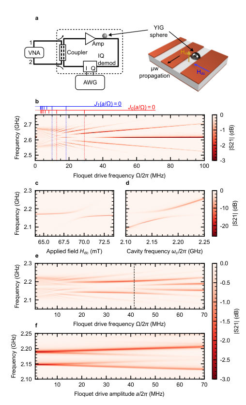
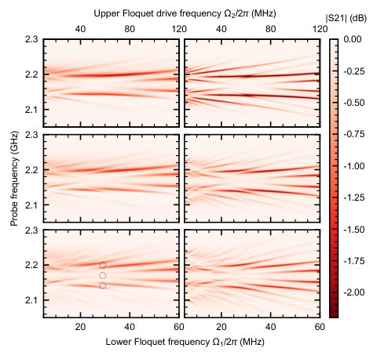
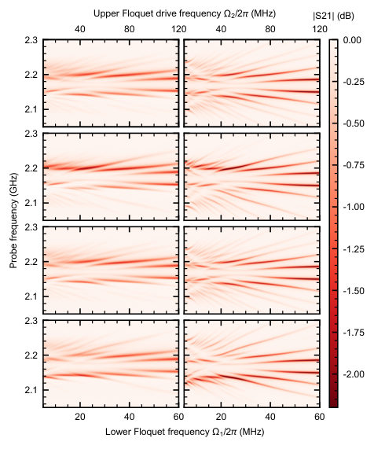
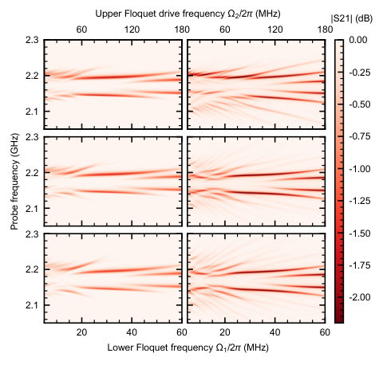
Summary. The paper presents a method for Floquet engineering of magnon-polaritons by modulating the microwave cavity frequency instead of the magnetic field. This approach enables larger modulation depths and allows for complex spectrum manipulation through multi-frequency drives. The study reveals new features like additional anticrossings and the formation of dark modes.
Why it may be interesting. This work is highly relevant to quantum optics and open quantum systems as it demonstrates a new way to control quasi-energy levels and sideband dynamics in hybrid systems using multi-tone driving, specifically highlighting interference-induced dark modes.
Main problem. Traditional Floquet engineering of magnon-polaritons via magnetic field modulation is experimentally difficult due to the requirement for large-amplitude, rapid frequency tuning. The authors seek an alternative method using cavity frequency modulation to achieve larger modulation depths and bandwidths.
Main result. The authors demonstrate that modulating the microwave cavity frequency allows for effective Floquet engineering, including the creation of new anticrossings between previously uncoupled sidebands using multi-frequency commensurate drives. They also observe the emergence of 'dark' modes due to destructive interference between sidebands.
Method. The researchers use an arbitrary waveform generator and an IQ demodulator to apply sinusoidal frequency modulation to a microwave cavity frequency. The transmission spectrum is measured using a vector network analyzer (VNA) and analyzed using Floquet matrix formalism and cavity input-output theory.
Model / system. A hybrid cavity electromagnonic system consisting of a microwave resonator (coplanar waveguide loop) coupled to a Yttrium Iron Garnet (YIG) sphere in the strong coupling regime. The system is described by a time-periodic Hamiltonian involving a time-varying cavity frequency.
Key observables. Transmission coefficient (|S21|), sideband appearance, and anticrossing gaps (mode splitting).
Important parameters / regimes. Coupling rate (g/2pi approx 20.7 MHz), cavity/magnon frequencies (approx 2.17 GHz), modulation frequency (5 to 180 MHz), and modulation amplitude (10 to 50 MHz).
Assumptions / limitations. The Floquet matrix is truncated at sideband orders n = +/- 8; the system is modeled using cavity input-output theory.
Figures summary. The figures likely show the transmission spectrum (S21) under single-frequency modulation, the appearance of sidebands, and the complex spectrum resulting from multi-frequency (m=2, 3) modulation including new anticrossings.
Paper structure. The paper introduces the challenge of magnetic modulation, describes the experimental setup and cavity modulation technique, presents results for single-tone Floquet engineering, extends the study to multi-frequency commensurate drives, and concludes with the implications for hybrid system manipulation.
Floquet engineering of cavity magnon-polaritons by periodically modulating the magnon frequency has recently attracted much interest as a way to manipulate the energy spectrum of magnon-photon hybrid systems. However, modulating the frequency of magnons by a time-varying bias magnetic field can be challenging. We demonstrate cavity magnon-polariton Floquet engineering by modulating the microwave cavity frequency, allowing large modulation depth and bandwidth. We apply commensurate two-frequency Floquet modulations with the higher frequency at twice and three times the lower frequency, and demonstrate that the resulting spectrum depends on the relative amplitude and phase of the two drive tones. In comparison with single-frequency Floquet modulations, the spectrum has qualitatively different features; in particular, new anticrossings appear between previously uncoupled sidebands. Our platform offers an alternative way to manipulate Floquet quasi-energy levels in hybrid systems.
Authors: Paul Greule, Wantong Huang, Kwan Ho Au-Yeung, Máté Stark, Johannes Schwenk, Christoph Sürgers, Wolfgang Wernsdorfer, Philip Willke
Type: both · Category: quantum information and computing · PDF: https://arxiv.org/pdf/2605.06450v1
Analysis basis: full PDF text, analyzed in chunks
Topic relevance: 🔥 QC/QI experiment 4/5 · non-equilibrium dynamics 3/5 · correlated / nonlocal dissipation 2/5 · spintronics-quantum-optics interface 2/5
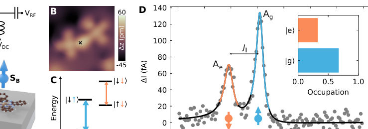
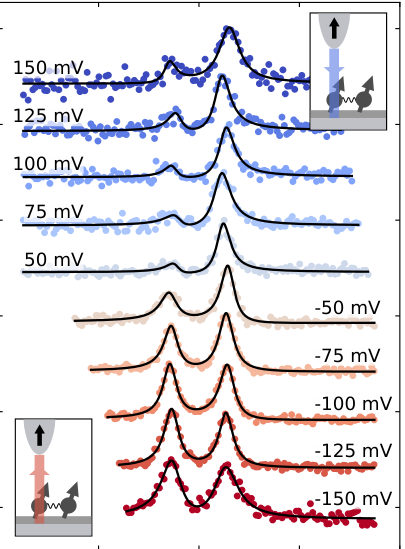
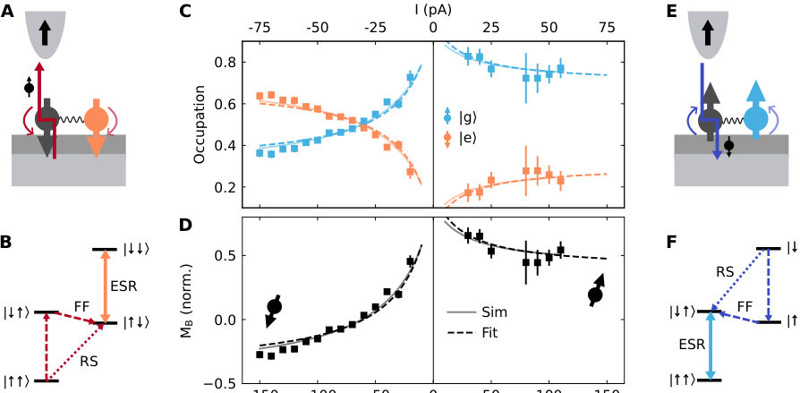
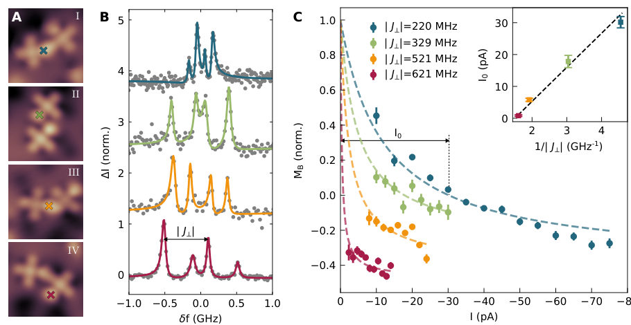
Summary. The researchers demonstrated a way to remotely initialize the spin state of a molecule using an electrical current from an STM tip. By using exchange coupling between two molecules, they showed that angular momentum can be transferred to a 'remote' spin, allowing for all-electrical control. This approach provides a scalable method for initializing qubits in molecular-based quantum architectures.
Why it may be interesting. It demonstrates a practical mechanism for non-equilibrium state preparation in a coupled spin system, which is highly relevant to open quantum systems and the control of many-body spin dynamics.
Main problem. The need for reliable, efficient, and all-electrical initialization of electron spin states in single molecules for quantum information processing, overcoming thermal equilibrium limits.
Main result. Demonstrated remote, all-electrical initialization of a single electron spin using spin-polarized tunneling current, where exchange coupling enables angular momentum transfer to a remote spin.
Method. Electron Spin Resonance Scanning Tunneling Microscopy (ESR-STM) was used to probe spin transitions, combined with rate equation modeling and second-order tunneling simulations.
Model / system. A pair of S=1/2 molecules (Fe-FePc) on an MgO/Ag(100) surface, modeled by an effective spin Hamiltonian including Zeeman terms and anisotropic exchange coupling (J_parallel and J_perp).
Key observables. Resonance frequencies, peak amplitudes, remote spin magnetization (M_B), and change in tunneling current (delta I).
Important parameters / regimes. Exchange coupling strength (|J_perp| approx 220-621 MHz), tip spin polarization (eta approx 0.2-0.5), and spin lifetime (T1 approx 1-10 microseconds).
Assumptions / limitations. The sensing spin is assumed to fully adapt to the tip's spin polarization; dipole-dipole interactions are neglected and absorbed into effective exchange parameters.
Figures summary. Figure 2 shows voltage dependence of ESR spectra; Figure B shows ESR spectra at avoided level crossing; Figure C shows remote spin magnetization vs. tunneling current and the relationship between I0 and exchange coupling; Figure S8/S9 show temperature-dependent pumping and spin chain transfer simulations.
Paper structure. The paper introduces the problem of spin initialization, describes the ESR-STM experimental setup and molecular system, presents the experimental demonstration of remote spin pumping, provides a theoretical model for the spin dynamics and exchange-mediated transfer, and concludes with discussions on scalability and temperature effects.
Electron spins in single molecules are a promising platform for quantum information processing. However, their practical implementation as qubits requires reliable control at the single-entity level, including an efficient state initialization. Here, we demonstrate the remote, all-electrical initialization of the electron spin in single molecules: Using electron spin resonance scanning tunneling microscopy, we investigate coupled pairs of S=1/2 molecules (Fe-FePc), where one molecule serves as a readout and pumping unit for the neighboring one. We show that the exchange interaction between them enables angular momentum transfer, which allows for the control of the remote spin state via the direction and magnitude of the spin-polarized tunneling current and the exchange coupling strength. These results establish a general, all-electrical approach for remote spin initialization that is readily transferable to a wide range of spin-based quantum architectures.
Authors: Karolina E. Połczyńska, Paweł Wyborski, Michał Gawełczyk, Shima Kadkhodazadeh, Battulga Munkhbat, Stefano Sanguinetti, Elizaveta Semenova
Type: both · Category: quantum information and computing · PDF: https://arxiv.org/pdf/2605.05956v1
Analysis basis: full PDF text, analyzed in chunks
Topic relevance: 🔥 quantum optics experiment 4/5 · QC/QI experiment 3/5
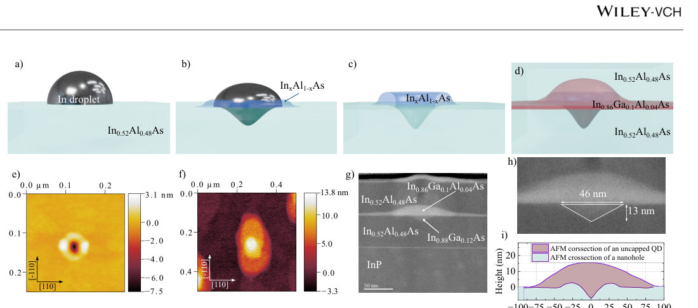
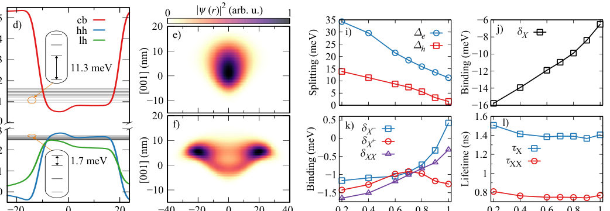
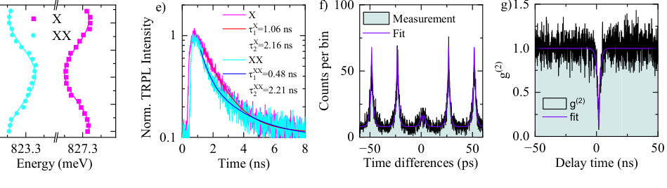
Summary. The researchers developed a local droplet etching method to grow highly symmetric InGaAs quantum dots for telecom-wavelength light emission. These dots show excellent single-photon purity and low fine-structure splitting, making them promising candidates for scalable quantum communication technologies.
Why it may be interesting. This work is highly relevant to quantum optics and quantum networks as it provides a scalable fabrication route for high-purity, symmetric single-photon sources at the critical telecom C-band wavelength.
Main problem. The need for reproducible, symmetric, and low-density single-photon emitters at telecom C-band wavelengths for quantum communication, overcoming the asymmetry and high fine-structure splitting found in standard Stranski-Krastanov grown quantum dots.
Main result. Demonstrated successful fabrication of high-quality InGaAs/InAlAs quantum dots using local droplet etching (LDE) that exhibit high single-photon purity (g2(0) < 0.09) and high in-plane symmetry in the telecom C-band.
Method. The study combines experimental MOVPE growth via local droplet etching, structural characterization (AFM, TEM, STEM, EDS), optical spectroscopy (micro-PL, TRPL, HBT), and numerical modeling (8-band k.p and configuration-interaction methods).
Model / system. Epitaxial InGaAs quantum dots embedded in InAlAs nanoholes on an InP substrate, characterized by a symmetric cone-like structure and a dome-shaped cap.
Key observables. Second-order autocorrelation g2(0), fine-structure splitting (FSS), degree of linear polarization (DOLP), photoluminescence linewidth, radiative decay time, and activation energy.
Important parameters / regimes. Telecom C-band (1500-1620 nm), QD density of 10^9/cm^2, in-plane aspect ratio of 1.14, and FSS values around 40-70 microeV.
Assumptions / limitations. The numerical modeling assumes a continuum elasticity theory for strain and uses a finite single-particle basis for the configuration-interaction approach.
Figures summary. Figures show nanohole and QD morphology via AFM/STEM, elemental composition via EDS, micro-PL spectra, polarization-resolved spectroscopy, and time-resolved photoluminescence decay.
Paper structure. The paper introduces the LDE growth approach, details the structural and compositional characterization of the resulting nanostructures, presents the optical performance and single-photon statistics, and concludes with theoretical modeling of carrier confinement and stability.
Significant progress in quantum light sources for quantum communication applications requires reproducible and symmetric quantum emitters acting as single-photon sources capable of generating entangled photons on demand at specific telecom wavelengths. Here, we propose telecom-emitting epitaxial quantum dots (QDs) fabricated using the local droplet etching (LDE) approach. The resulting well-defined, low-density ($10^9$/cm$^2$) QDs based on In$_{x}$Ga$_{1-x}$As are formed in symmetric LDE nanoholes (in-plane aspect ratio of 1.14) in In$_{0.52}$Al$_{0.48}$As. Detailed transmission electron microscopy provides comprehensive insight into the structural integrity, interface quality, and compositional profiles of the QDs, which underpin their promising optical properties. Photoluminescence spectroscopy reveals narrow emission lines (0.2 meV) and high optical quality, while second-order autocorrelation measurements confirm clear single-photon emission, with $g^{(2)}(0)=0.07\pm0.02$ under above-band continuous-wave excitation and $g^{(2)}(0)=0.16 \pm 0.18$ under pulsed excitation. Precise numerical modeling, combining multiband $\boldsymbol{k} \cdot \boldsymbol{p}$ and configuration-interaction methods, supports the optical characterization and identifies thermal excitation pathways that explain the persistence of emission up to liquid-nitrogen temperatures. These results highlight the versatility of the LDE approach for integrating new material systems and pave the way toward scalable fabrication of quantum light sources with tailored emission properties.
Authors: T. Congy, G. A. El
Type: theory · Category: statistical mechanics · PDF: https://arxiv.org/pdf/2605.06306v1
Analysis basis: full PDF text, analyzed in chunks
Topic relevance: non-equilibrium dynamics 3/5 · Keldysh / 2PI / non-Gaussian methods 2/5 · non-equilibrium universality 2/5
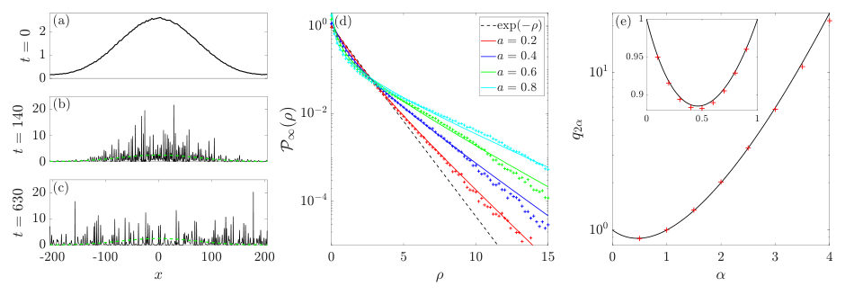
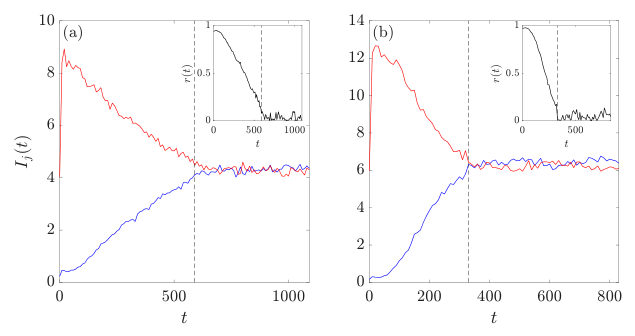
Summary. This paper provides a new analytical framework to predict the statistical distribution of intensities in nonlinear wave fields dominated by solitons. By using a stochastic version of the inverse scattering transform, the authors successfully map initial random states to long-time asymptotic distributions. This result is applicable to a wide range of nonlinear physical phenomena, including optics and fluid dynamics.
Why it may be interesting. The development of a statistical framework for integrable turbulence and the derivation of exact PDFs for extreme events (rogue waves) is highly relevant to understanding non-equilibrium dynamics and wave-particle interactions in many-body systems and nonlinear optics.
Main problem. Determining the probability density function (PDF) and statistical properties of random nonlinear wave field intensities in the long-time, semiclassical integrable turbulence regime.
Main result. The authors develop an analytical framework using a stochastic inverse scattering transform to derive an explicit integral representation for the asymptotic PDF, showing excellent agreement with numerical simulations.
Method. The study employs a stochastic analogue of the inverse scattering transform (SST) and compares analytical predictions with direct numerical simulations using a pseudo-spectral, fourth-order Runge-Kutta method.
Model / system. The focusing Nonlinear Schrödinger Equation (fNLSE) in the semiclassical regime, representing physical systems such as water waves, nonlinear optics, and superfluids.
Key observables. Probability density function (PDF) of wave field intensity, spectral density of states (DOS), and statistical moments such as skewness and kurtosis.
Important parameters / regimes. Semiclassical limit (slowly varying initial states), spectral support (Lambda), initial intensity PDF, and the amplitude of initial periodic modulation (a).
Assumptions / limitations. The system is assumed to be integrable, the initial state is slowly varying (semiclassical limit), and the long-time state is approximated by a bound-state soliton gas.
Figures summary. Figure 1 shows the numerical evolution of wave intensity and compares numerical PDFs to analytical predictions; Figure 2 illustrates the temporal evolution of spatial averages and the transition to a homogeneous regime.
Paper structure. The paper introduces the problem of nonlinear wave statistics, proposes the soliton gas resolution conjecture, develops the stochastic inverse scattering transform framework, validates the theory with specific cases (modulational instability and partially coherent waves), and extends the analysis to composite soliton gases.
We develop a general analytical framework for determining the probability distribution of random nonlinear wave fields governed by the focusing nonlinear Schrödinger equation (fNLSE) in regimes where typical realizations are dominated by solitons. We formulate the soliton gas resolution conjecture for the long-time evolution of slowly varying ("semiclassical") random initial states and implement a stochastic analogue of the inverse scattering transform by establishing a relationship between the spectral density of states of the underlying bound-state soliton gas and the probability density function (PDF) of the intensity of the resulting turbulent wave field. The derived explicit integral representation for the PDF is shown to be in excellent agreement with direct numerical simulations across several representative regimes of fNLSE integrable turbulence. The results have broad applicability to physical systems including water waves, nonlinear optics, and superfluids.
Authors: Christopher A. Bairnsfather, Ralph M. Kaufmann, Terry A. Loring, Alexander Cerjan
Type: theory · Category: numerical methods · PDF: https://arxiv.org/pdf/2605.05423v1
Analysis basis: full PDF text, analyzed in chunks
Topic relevance: analog quantum simulation 3/5
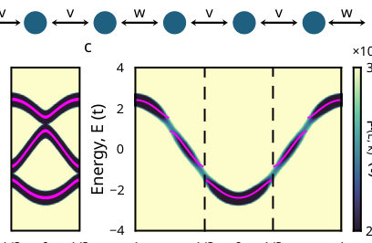
Summary. This paper presents a new numerical framework for 'band unfolding' that works for systems without exact periodicity, such as quasicrystals and disordered materials. By using a quadratic pseudospectrum, the method can reconstruct dispersion relations and effectively separate bulk electronic properties from edge states in finite systems.
Why it may be interesting. The method provides a robust way to extract momentum-resolved spectral features from complex, non-periodic Hamiltonians, which is highly relevant for analyzing the dynamics and spectra of many-body systems or cold atom lattices with disorder or moiré potentials.
Main problem. Traditional band theory fails in systems lacking exact translational symmetry, such as disordered, aperiodic, or finite systems, and existing unfolding methods do not guarantee states are simultaneously localized in energy and momentum.
Main result. The authors introduce a quadratic pseudospectrum framework that generalizes band unfolding to aperiodic and finite systems, enabling the reconstruction of dispersion relations and the isolation of bulk properties from boundary effects.
Method. A quadratic pseudospectrum approach using a composite operator Q(E, k) to identify approximate joint eigenvectors of the Hamiltonian and translation operators, supplemented by a position-dependent operator to suppress boundary states.
Model / system. The framework is benchmarked on 1D trimerized lattices, 1D Fibonacci chains (quasiperiodic), and 2D breathing honeycomb lattices (topological/moiré-like).
Key observables. Quadratic gap mu(E, k), quadratic epsilon-pseudospectrum, and momentum-resolved uncertainty (variance and deviation).
Important parameters / regimes. Kappa (balance between energy and momentum resolution), kappa_X (spatial localization scale), and hopping amplitudes (v, w, t1, t2).
Assumptions / limitations. The method assumes the existence of almost-commuting operators and is subject to finite-size effects (beading) in real-space implementations.
Figures summary. Figure 1 shows a trimerized lattice schematic and folded/unfolded band heatmaps; Figure 2 compares unfolded spectra with and without boundary suppression; Figure 3 displays the Fibonacci chain dispersion and gap hierarchy; Figure 4 shows reconstructed Dirac points in the breathing honeycomb lattice.
Paper structure. Introduction of the problem (limitations of band theory) -> Mathematical framework (quadratic pseudospectrum and composite operator) -> Implementation of boundary suppression -> Benchmarking on periodic/trimerized systems -> Application to aperiodic (Fibonacci) and 2D (breathing honeycomb) systems -> Error decomposition and uncertainty analysis.
Band theory provides the foundation for understanding electronic structure in crystalline materials, but its reliance on exact translational symmetry limits its applicability to systems with defects, disorder, incommensurate modulations, or large unit cells. Here, we introduce a band unfolding framework that directly generalizes traditional band theory to systems where exact periodicity is absent, and which remains well-defined for both aperiodic and finite systems. To do so, we employ a pseudospectral approach to identify approximate joint eigenvectors of a system's Hamiltonian and translation operators, thereby yielding an unfolded band structure whose features are directly connected to the manifestation of approximate extended states simultaneously localized in energy and crystalline momentum. To reveal bulk-only spectral phenomena in finite systems, we further show that this pseudospectral framework naturally accommodates additional operators that suppress contributions from boundary-localized states, enabling the systematic isolation of intrinsic bulk behavior. We benchmark the scheme on several representative systems in one and two dimensions, including a Fibonacci chain, where our approach is able to both reveal a dispersive envelope while preserving the underlying hierarchy of spectral gaps. Looking forward, this pseudospectral approach may yield a broad framework for predicting momentum-resolved material responses in aperiodic, disordered, and finite systems where conventional band-theoretic methods are not applicable.
Authors: Xiao-Jiao Wang, Dongling Liu, Di Zhu, Zheng-Yang Zhuang, Zhongbo Yan
Type: theory · Category: other · PDF: https://arxiv.org/pdf/2605.05316v1
Analysis basis: full PDF text, analyzed in chunks
Topic relevance: non-equilibrium dynamics 3/5
Summary. This paper shows that circularly polarized light can induce even-parity spin splitting in nonmagnetic, centrosymmetric materials, effectively mimicking the spin physics of ferromagnets and altermagnets. By controlling the orbital character, one can realize various spin-split symmetries and even topological Chern insulator phases. This provides a new pathway for light-induced control of spin and topological properties without intrinsic magnetism.
Why it may be interesting. not directly relevant
Main problem. The paper investigates breaking the traditional dichotomy between spin-orbit coupling (odd-parity) and magnetic exchange coupling (even-parity) by generating even-parity spin splitting in nonmagnetic, centrosymmetric systems using light.
Main result. The authors demonstrate that circularly polarized light can dynamically generate even-parity spin splitting with s-, d-, and g-wave symmetries, and that these driven states can host Chern insulator phases.
Method. The study employs Floquet-Bloch theory and a high-frequency, off-resonant expansion to derive an effective Hamiltonian for the time-periodic system.
Model / system. The model consists of 2D, nonmagnetic, centrosymmetric systems with spin-orbit coupling, including square lattice models with p-orbitals (s-wave) and d-orbitals (d- and g-wave).
Key observables. Spin-splitting parity, spin-split energy spectra, Chern number, spin magnetization, and orbital magnetization.
Important parameters / regimes. Driving frequency (high-frequency regime), light amplitude, light helicity, spin-orbit coupling strength, and orbital angular character.
Assumptions / limitations. The analysis is performed in the high-frequency, off-resonant regime where the driving frequency is much larger than the bandwidth.
Figures summary. Figure 1 illustrates the symmetry dichotomy and the new light-induced mechanism; Figure 2 shows energy bands and isoenergy contours for s-wave splitting; Figure E1 shows g-wave spin texture isoenergy contours.
Paper structure. The paper begins by establishing the symmetry dichotomy, introduces the Floquet-driven model, analyzes specific orbital-dependent splitting symmetries (s, d, and g-wave), discusses topological phases and magnetization, and concludes with material candidates and experimental signatures.
Spin splitting underpins a vast range of spin-dependent phenomena. Traditionally, two primary mechanisms generate such splitting: relativistic spin-orbit coupling (SOC) and nonrelativistic magnetic exchange coupling (MEC). Governed by distinct symmetry constraints, they produce splittings of opposite parity -- odd for SOC and even for MEC -- a dichotomy that underpins the distinct spin physics of nonmagnetic and magnetic systems. In this work, we break this dichotomy by demonstrating the dynamic generation of even-parity spin splitting in centrosymmetric, nonmagnetic systems driven by circularly polarized light. We show that the symmetry of the induced splitting is controlled by the angular character of the underlying orbitals, enabling the realization of s-wave, d-wave, and g-wave spin-split band structures identical to those of ferromagnets and altermagnets. Furthermore, we find that these spin-split bands can naturally host a Chern insulator phase. We also discuss the associated spin and orbital magnetization. Our results establish a direct and previously unrecognized conceptual link between the two fundamental mechanisms of spin splitting.
Authors: J. Kimak, Tomas Ostatnicky, M. Nerodilova, F. Johnson, O. Faiman, T. Trejtnar, D. Boldrin, F. Rendell-Bhatti, J. Zemen, B. Zou, A. P. Mihai, X. Sun, F. Yu, E. Schmoranzerova, L. Nadvornik, L. F. Cohen, P. Nemec
Type: both · Category: strongly correlated electrons · PDF: https://arxiv.org/pdf/2605.06233v1
Analysis basis: full PDF text, analyzed in chunks
Topic relevance: non-equilibrium dynamics 2/5 · spintronics-quantum-optics interface 2/5
Summary. This paper demonstrates a method to separate magnetic and optical signals in the ultrafast dynamics of non-collinear antiferromagnets. By studying Mn3NiN and Mn3GaN, the authors reveal how magnetic field and temperature influence domain redistribution and quenching processes. This provides deeper insight into the complex spin dynamics of antiperovskite materials.
Why it may be interesting. not directly relevant
Main problem. The challenge of disentangling magnetic (MOKE-like and Voigt) from non-magnetic (refractive index changes) contributions to the ultrafast dynamics in antiperovskite non-collinear antiferromagnets.
Main result. The researchers successfully separated magnetic quenching from optical heating and discovered that Mn3NiN exhibits a temperature-dependent transition from single-step to two-step quenching dynamics, unlike the temperature-invariant dynamics in Mn3Sn.
Method. Time-resolved pump-probe spectroscopy combined with full optical modeling using Yeh's formalism and probe-polarization-resolved measurements.
Model / system. Thin films of antiperovskite non-collinear antiferromagnetic metals Mn3NiN (Gamma4g phase) and Mn3GaN (Gamma5g phase). The model incorporates domain redistribution driven by piezomagnetic moments and uses a four-parameter fit for the permittivity tensor.
Key observables. Change in polarization rotation (delta beta), transient transmission (delta T/T), and magnetic-field-dependent (MFD) components.
Important parameters / regimes. Neele temperature (TN approx 246 K), quenching time (tauQ approx 0.4 ps), and sample tilt angle (Theta).
Assumptions / limitations. Neglecting domain pinning and defects, and assuming equal initial domain populations in zero-field Mn3NiN.
Figures summary. Fig 1 shows the pump-probe setup and polarization angles; Fig 5 displays temperature-dependent rotation dynamics (single-step vs two-step); Fig 8 and 9 illustrate the domain variants and computed MOKE/Voigt signals for different tilt angles.
Paper structure. The paper introduces the problem of signal disentanglement, describes the experimental setup and materials, presents the optical modeling strategy, details the results for Mn3NiN and Mn3GaN (including field and tilt dependence), and concludes with a discussion on temperature-dependent quenching dynamics.
Non-collinear antiferromagnets are a class of spin-polarized antiferromagnets in which chiral spin textures give rise to Berry-curvature-driven phenomena, such as the anomalous Hall effect (AHE), without net magnetization. We investigate the properties of thin films of antiperovskite non-collinear antiferromagnetic metals Mn3NiN and Mn3GaN using pump-probe experiments. In both materials, we observe a strong dependence of pump-polarization-independent dynamics, induced by femtosecond laser pulses, on the angle between the sample normal and the direction of probe propagation. In Mn3NiN, where the presence of a sizable AHE indicates the Γ4g phase, the measured magnetooptical (MO) signals acquire an additional, strong dependence on the external magnetic field when the probe pulses are incident at nonzero angles. In contrast, in Mn3GaN, where the absence of AHE indicates the Γ5g phase, the measured signals do not depend on the magnetic field. Using probe-polarization-resolved measurements combined with full optical modeling based on Yeh's formalism, we quantitatively separate magnetic and non-magnetic contributions to the measured signals. We show that in Mn3NiN, the observed magnetic field dependence results from field-controlled redistribution of magnetic domain populations, enabled by their piezomagnetic moments and detected by a Kerr-like MO effect, while this effect is absent in Mn3GaN. Temperature-dependent measurements reveal a change from single-step to two-step quenching dynamics with increasing temperature in Mn3NiN. This behavior contrasts with the nearly temperature-independent quenching dynamics reported for the non-collinear antiferromagnetic Heusler compound Mn3Sn, but resembles the crossover from type-I to type-II demagnetization dynamics in metallic ferromagnets.
Authors: Anikeya Aditya, Sampad Mohanty
Type: theory · Category: numerical methods · PDF: https://arxiv.org/pdf/2605.05393v1
Analysis basis: full PDF text, analyzed in chunks
Topic relevance: Frenkel-Kontorova 2/5
Summary. The MLM Python package provides an efficient way to generate periodic supercells for twisted multilayer 2D materials. By replacing brute-force searches with a linear-algebra-based approach, it significantly accelerates the discovery of commensurate structures, even for very small twist angles and complex multi-layer systems.
Why it may be interesting. not directly relevant
Main problem. Constructing periodic, commensurate supercells for twisted multilayer 2D materials is computationally expensive because conventional brute-force enumeration scales as O(N^4).
Main result. The authors developed MLM, a Python package that uses a 'solve-and-round' algorithm to reduce complexity to O(N^2), achieving speedup ratios of up to 216x and enabling the simulation of supercells with millions of atoms.
Method. The 'solve-and-round' algorithm solves a 2x2 linear system to determine top-layer indices from bottom-layer vectors, combined with a sequential extension for multiple layers and a fractional-coordinate folding algorithm for atom selection.
Model / system. The package is applied to twisted multilayer 2D materials with various Bravais lattices, including hexagonal (graphene, MoS2), square (SrTiO3), and mismatched heterostructures (PbTiO3/SrTiO3).
Key observables. Twist angle, mismatch residual (delta_vec), relative residual (rho), and supercell vector norm.
Important parameters / regimes. Twist angles (0 to 90 degrees), lattice constants, fractional tolerance (delta), and the integer index search window [n_min, n_max].
Assumptions / limitations. The matching process is inherently asymmetric, treating the bottom layer as an exact reference while the top layer matches within a prescribed tolerance.
Figures summary. Visualizations of graphene and MoS2 supercells showing AA and AB stacking, a trilayer MoS2 supercell, and top-view images of SrTiO3 structures.
Paper structure. Introduction to the commensurability challenge, description of the MLM package and its solve-and-round algorithm, demonstration of the package on various 2D materials (graphene, MoS2, oxides), performance benchmarking against brute-force methods, and discussion of limitations and future work.
Moire superlattices formed by stacking atomically thin two-dimensional materials with a relative twist angle have emerged as a versatile platform for engineering quantum electronic, optical, and ferroic properties. Computational modelling of such systems with periodic boundary conditions requires the identification of commensurate supercells in which the moire periodicity is reproduced exactly, or within a prescribed tolerance. While several codes exist for bilayer systems, extension to three or more layers with independently chosen twist angles remains a significant challenge. Here we present MLM (Multi-Layer Moire), an open-source Python package that constructs periodic, PBC-compatible moire supercells for an arbitrary number of twisted layers with any Bravais lattice type. The package employs a solve-and-round algorithm that reduces the coincidence-site search to an $O(N^2)$ linear-algebra problem per twist angle, compared to the O(N^4) brute-force enumeration required by conventional approaches. We demonstrate the package on bilayer graphene, bilayer and trilayer MoS$_2$, bilayer SrTiO$_3$, and a PbTiO$_3$/SrTiO$_3$ oxide heterostructure, producing simulation-ready structure files for both VASP and LAMMPS. The fractional-coordinate atom-selection algorithm scales to supercells containing millions of atoms and is robust across all twist angles including very small angles below 1 degree.
Authors: Charles Bon-Mardion, Arnaud Lorin, Edouard Deschaseaux, Céline Feautrier, Daniel Mermin, Jean Charbonnier, Jing Li, Jean-Luc Sauvageot, Candice Thomas
Type: experiment · Category: quantum information and computing · PDF: https://arxiv.org/pdf/2605.06146v1
Analysis basis: full PDF text, analyzed in chunks
Topic relevance: QC/QI experiment 2/5
Summary. This paper provides experimental measurements of the thermal conductivity of various substrates at sub-Kelvin temperatures. It identifies high-resistivity silicon as the best candidate for heat removal and highlights the need for 3D integration to manage heat in large-scale quantum processors.
Why it may be interesting. not directly relevant
Main problem. Thermal management is a critical bottleneck for scaling large-scale quantum integrated systems, as heat from control electronics can cause qubit decoherence.
Main result. High-resistivity silicon exhibits the highest thermal conductivity among studied substrates, while Nb routing lines increase in-plane conductance but the substrate remains the dominant heat path.
Method. Thermal conductivity was measured using a heater and RuO2 thermometer in the sub-Kelvin regime, with analysis using a finite-element non-equilibrium Green's function approach to extract phonon mean free paths.
Model / system. The study investigates various substrates (high-resistivity and low-resistivity silicon, sapphire, and borosilicate glass) and an on-chip routing test vehicle featuring superconducting Niobium lines on silicon.
Key observables. Thermal conductivity (kappa), phonon mean free path (MFP), and in-plane thermal conductance.
Important parameters / regimes. Sub-Kelvin temperature regime (50 mK to 1.2 K), power dissipation in the nanowatt to microwatt range, and phonon mean free path ranging from 30 to 4000 micrometers.
Assumptions / limitations. The thermal resistance of NbTi measurement wires and the volume of Stycast 1266 are assumed to be negligible; self-heating of the thermometer is assumed to be negligible at 1 nW.
Figures summary. Fig 1 shows the measurement setup and thermal model; Fig 5 and 6 illustrate the routing test vehicle setup and temperature gradients as a function of power; Supplementary figures detail the measurement validation and packaging workflow.
Paper structure. The paper introduces the thermal management challenge, presents experimental characterization of substrate thermal conductivity, evaluates the impact of on-chip Nb routing, and concludes with implications for 3D quantum architectures.
The development of large-scale quantum systems increasingly relies on the close integration of heterogeneous components such as qubits, control electronics, and readout circuits, making thermal management at cryogenic temperatures a central challenge in such architectures. In this work, we present an experimental thermal study of two building blocks of such systems: the substrate and the on-chip routing. We first investigate the sub-kelvin thermal conductivity of four substrate materials: high-resistivity silicon, low-resistivity silicon, borosilicate, and sapphire. We report that high-resistivity silicon exhibits the highest thermal conductivity among the substrates studied ($5\cdot10^{-2}$~W/m$\cdot$K at 300~mK), while low-resistivity silicon, borosilicate, and sapphire show lower values ($8\cdot10^{-4}$~W/m$\cdot$K, 2$\cdot10^{-3}$~W/m$\cdot$K, and 2$\cdot10^{-3}$~W/m$\cdot$K at 300~mK, respectively). Ballistic conductance evaluation using a finite-element non-equilibrium Green's function approach further allows us to extract the phonon mean free path in each substrate and gives insights into the involved scattering mechanisms. Additionally, we employ a dedicated test vehicle to evaluate the impact of on-chip routing on the thermal conductance of the system. Our measurements with superconducting Nb routing lines reveal that the routing increases the in-plane thermal conductance of the system, but the substrate remains the dominant heat path. These results highlight the critical role of the substrate choice within quantum systems and underscore the importance of function partitioning through 3D integration approaches for more efficient thermal management in quantum architectures.
Authors: Kazi Ranjibul Islam, Andrey Chubukov
Type: theory · Category: strongly correlated electrons · PDF: https://arxiv.org/pdf/2605.05433v1
Analysis basis: full PDF text, analyzed in chunks
Topic relevance: Keldysh / 2PI / non-Gaussian methods 2/5
Summary. This paper explores how nematic fluctuations change the nature of collective modes in superconductors. It demonstrates that the resulting highly anisotropic gap leads to a unique dispersion of phase and amplitude modes that differs significantly from standard BCS theory.
Why it may be interesting. not directly relevant
Main problem. The paper investigates the dispersion and spectral structure of collective modes (transverse phase and longitudinal amplitude modes) in a superconductor where pairing is mediated by long-range nematic fluctuations.
Main result. The authors find that the analytic structure of the pair susceptibility is qualitatively different from BCS theory, exhibiting highly unconventional dispersion, including split peaks and logarithmic singularities in the longitudinal channel.
Method. The study uses Gorkov's diagrammatic technique and the Random Phase Approximation (RPA) to calculate the pair-pair susceptibility and its spectral function.
Model / system. A 2D one-band model of electrons with an anisotropic s-wave gap, specifically motivated by nematic-fluctuation-mediated superconductors like FeSe and its doped derivatives.
Key observables. Transverse (phase) susceptibility, longitudinal (amplitude) susceptibility, and their respective real and imaginary spectral functions.
Important parameters / regimes. Fermi velocity (vF), superconducting gap amplitude (delta_0), momentum transfer (q), frequency (Omega), and coupling strength (g).
Assumptions / limitations. The analysis assumes a zero-temperature limit, a 2D electron system, and neglects long-range Coulomb interactions in certain parts of the derivation.
Figures summary. The notes mention a polar plot (Fig 1) and a frequency dependence plot (Fig 9).
Paper structure. The paper introduces the problem of nematic-mediated pairing, defines the Hamiltonian and anisotropic gap model, derives the pair susceptibility using diagrammatic techniques, analyzes the pole structure and dispersion in both transverse and longitudinal channels, and provides mathematical proofs for the analytic properties of the susceptibility in an appendix.
We analyze the spectrum of collective modes in a superconductor in which pairing is mediated by long-range nematic fluctuations. Previous experimental and theoretical studies have found that the superconducting gap in such a system is highly anisotropic and, at any finite $T
Authors: Changjian Xie
Type: theory · Category: numerical methods · PDF: https://arxiv.org/pdf/2605.05858v1
Analysis basis: full PDF text, analyzed in chunks
Summary. This paper compares different numerical schemes for simulating micromagnetics, specifically investigating if the magnetization magnitude constraint can be maintained without an explicit projection step. It finds that the BDF1 method is robust and consistent even without projection, potentially simplifying the numerical implementation of magnetic simulations.
Why it may be interesting. not directly relevant
Main problem. The study evaluates the necessity and impact of using nonlinear projection steps to enforce constant magnetization magnitude in micromagnetic simulations.
Main result. The BDF1 method is found to be highly consistent whether or not a projection step is used, whereas the Gauss-Seidel method shows significant discrepancies at high dissipation coefficients.
Method. A comparative analysis of two first-order semi-implicit time-discretization strategies: the implicit Gauss-Seidel method (GSPM) and the Backward Differentiation Formula (BDF1), both tested with and without a spherical projection step.
Model / system. The study uses the Landau-Lifshitz-Gilbert (LLG) equation to model ferromagnetic materials, specifically focusing on ferromagnetic thin films and nanostrips.
Key observables. Energy evolution (decay and stability), magnetization profiles, and domain wall motion.
Important parameters / regimes. Gilbert damping coefficient (alpha) ranging from 0.01 to 0.1, external magnetic field (5 mT), and grid discretization scales.
Assumptions / limitations. The study is limited to first-order numerical schemes and assumes the validity of the LLG equation for the modeled ferromagnetic systems.
Figures summary. Figures compare magnetization profiles and energy evolution for GSPM and BDF1 at different damping levels, alongside time-series snapshots of domain wall motion and various magnetic configurations (C, Diamond, Flower, etc.).
Paper structure. The paper introduces the micromagnetic problem, defines the numerical schemes (GSPM and BDF1) with and without projection, presents stability analysis, compares static and dynamic simulation results across different damping regimes, and concludes with suggestions for future higher-order extensions.
In micromagnetic simulations, the constant magnitude of the magnetization can be derived from the continuity equation. Since the time evolution of the magnetization in the continuity equation is perpendicular to the plane determined by the magnetization and the effective field, taking the inner product of both sides of the model with the magnetization shows that the evolution rate of the magnitude of the magnetization is zero, thus keeping the magnitude constant. From this perspective, the equation itself can maintain the constraint of constant magnetization magnitude. We discretized the continuity equation and compared two first-order semi-implicit strategies in time: one is the implicit Gauss-Seidel method, and the other is the semi-implicit Backward Differentiation Formula (BDF) method. We considered the comparison between these two schemes with and without the projection step. The results of micromagnetic simulations show that when the dissipation coefficient is large, the implicit Gauss-Seidel method without the projection step has significant differences from the method with the projection step in both the achieved steady state and domain wall motion. When an appropriate dissipation coefficient is selected, the difference between the two narrows, and both the steady state and domain wall motion can be simulated. For the other method, BDF1, whether the dissipation coefficient is large or small, the results with and without the projection step are quite consistent, and it can effectively simulate the domain wall motion.
← Index · ← Previous · Next →